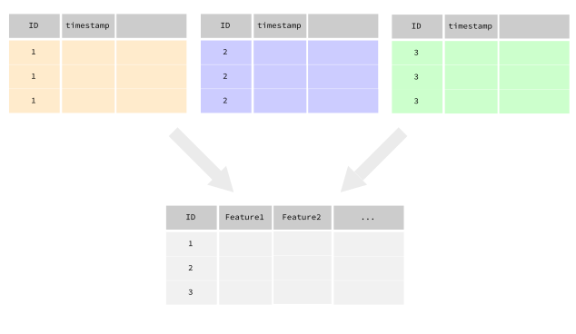

See the tutorial for an introduction into the package.
Introduction
fxtract helps you to extract user-defined features from raw data. For example, if you want to calculate features (e.g. mean or sd of some columns) out of timeseries data of many IDs:  So, if you have different datasets of many IDs and you want to calculate features (covariates) for each ID out of these datasets, then fxtract might be for you.
This package utilizes the functionality of the batchtools-package while keeping an easy to access API. The user only needs to define functions which have a dataset as input and named vector with the desired features as output. The whole data wrangling (calculating the features for each ID, possibly in parallel) is handled by fxtract. This package works for very large datasets with many different IDs and the main functionality is written in R6. Some helpful functions for preprocessing timestamped data are also supplied.
Why don’t just use dplyr or other packages?
At first glance it looks like we just rewrote the summarize() functionality of dplyr. For small datasets and few (easy to calculate) features, using fxtract may indeed be a little overkill (and slower too). Another similar functionality is covered by the aggregate()-function from the base stats package.
However, this package was especially designed for projects with large datasets, many IDs, and many different feature functions. Once your dataset (with all IDs) becomes too big for memory, or if some feature functions fail on some IDs, using our package can save you many lines of code.
Usage
library(fxtract)
# user-defined function:
fun = function(data) {
c(mean_sepal_length = mean(data$Sepal.Length),
sd_sepal_length = sd(data$Sepal.Length))
}
# R6 object:
xtractor = Xtractor$new("xtractor")
xtractor$add_data(iris, group_by = "Species")
xtractor$add_feature(fun)
xtractor$calc_features()
xtractor$results## Species mean_sepal_length sd_sepal_length
## 1: setosa 5.006 0.3524897
## 2: versicolor 5.936 0.5161711
## 3: virginica 6.588 0.6358796Features
- Unit-tested functions.
- Extracting features from raw data of many different users/IDs/etc:
- With the R6 Class
Xtractor.- Advantages:
- No more code bloat thanks to R6.
- Very large datasets are supported, since data is only read into RAM when needed. Minimum requirement: Datasets for each participant individually must be small enough to be read into memory.
- Internally, batchtools is used for parallelization and error handling.
- Features will be calculated for each participant individually.
- If one feature on one participant throws an error, this will not stop the whole process (like in a traditional R script). A log file with the error message is created (by batchtools), and the remaining features will still be calculated.
- Individual features can be deleted or updated easily.
- Calculation of features can be done in parallel and the process can be monitored. It is also possible to stop and return the calculation at a later time.
- Results can be easily collected in one final dataframe.
- Advantages:
- With the R6 Class
- Timestamp to date & time converters:
- This is useful for filtering datasets, e.g. if one is interested in filtering the morning hours from a dataset, or distinguishing working days from weekends.